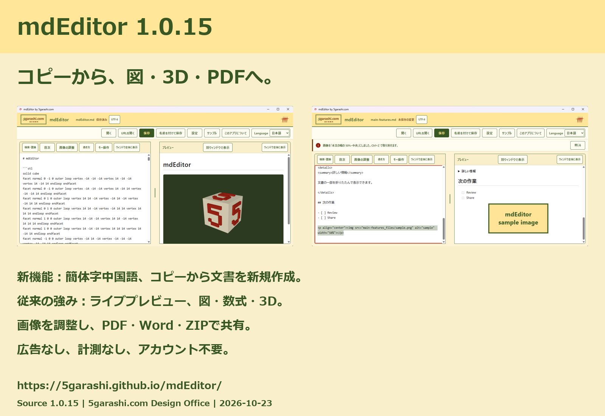

制作事例：mdEditor
Windowsアプリの開発と、その用途を伝える日英の資料制作を紹介します。
アプリと実演
編集、図・数式のプレビュー、PDF保存を実際の操作で紹介。
Web・記事・サンプル
用途を知る、操作を見る、文書を開いて試す、という流れを用意。
SNS画像と印刷資料
用途別の日英画像と、Store・事務所へつながるQR付きPDFを制作。

これは制作物の紹介です。未確認の集客効果や利用者数は掲載していません。

Windowsアプリの開発と、その用途を伝える日英の資料制作を紹介します。
編集、図・数式のプレビュー、PDF保存を実際の操作で紹介。
用途を知る、操作を見る、文書を開いて試す、という流れを用意。
用途別の日英画像と、Store・事務所へつながるQR付きPDFを制作。

これは制作物の紹介です。未確認の集客効果や利用者数は掲載していません。